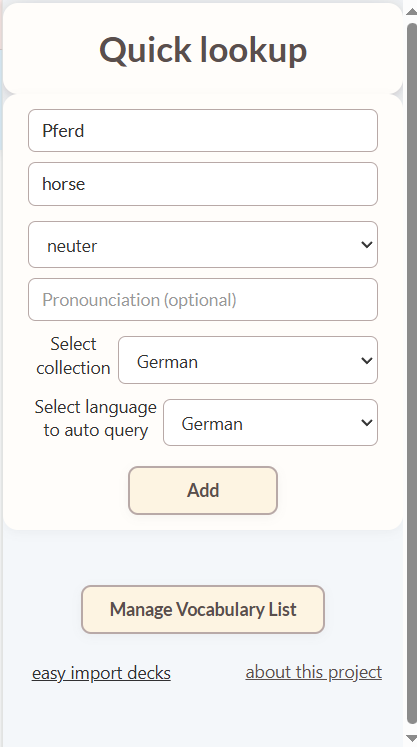
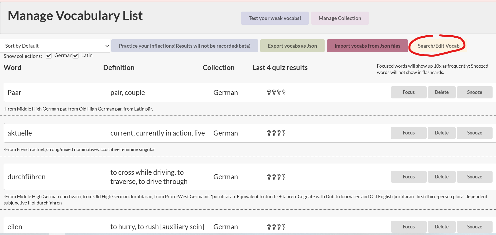

How to use this extension?
now with ability to change your backgrounds! Yes I drew them no AI was used

How do I use this extension to learn German?
This year I learned german with nicos weg and developed this extension along - in roughly 50 days of casual learning after work and passed Goethe A1 with 96/100. currently I am learning B1, and developed transcribing and listening MSQ so I can practice listening.
I have been learning Latin as a hobby very slowly for 5 years and when i started reading actual latin pieces (cambridge CLA) in 2024I started to feel the need to remember more vocabs. This made me start developing this extensions with its various features, especially the auto dictionary for any inflections of any words.
How do I use this extension to learn Latin?
Text tutorial
How to Import the Decks (in 3 steps)
-
Click the extensions icon, pin this extension.
-
Click the extension icon. Choose the decks you want to add, the vocabs will sync quickly to your vocab
lists

You can click here to add decks

-
Open a new tab, click the cog button to set the time you want to autoplay the flashcards.
Sometimes quizzes will be auto generated for you to enhance your learning!
How to look up words
- Click the icon of this extension whenever you see a new word.
-
Enter the word you want to query, select the language and the collection you want to add it into (you
can
leave everything else blank) and press Add.The extension will look up everything you
need
for you. And then press 'Add to Database'.
Or,
Enter the word/phrase, definition and optional gender and pronunciation. Select the collection, press Add.

*You dont have to choose collection and language everytime, it will remember your last choice. - First,Click the extension icon then press 'Manage Vocabulary List'.
- Then, press 'Export vocabs as Json' then check your download folder.
- If you want to upload a deck your friend made, you can press 'Import vocabs from Json files'
- Select the file you want to upload then refresh the page.

- First, press 'Test your vocab' when you open up a new tab
- Choose the collection you want to test and areas you want to focus and press start button.

- You can do as many tests as you like. If you press 'End test', you will see your scores on each
section
compared to your past results on this collection and your scoring trend. Otherwise it will not be
recorded.


- First, press 'Test your vocab' when you open up a new tab. And then press 'Test your listening'
- Choose the collection and area you want to test and make your selection here.
- Press the speaker button to hear the words. And you can write it in the test area. Press 'Reveal Words'
to
reveal them. You can press next to go to the next set, and you can do as many sets as you want.

How to make a deck and share to others
- First,Click the extension icon then press 'Manage Vocabulary List'.
- Then, press 'Export vocabs as Json' then check your download folder.
- If you want to upload a deck your friend made, you can press 'Import vocabs from Json files'
- Select the file you want to upload then refresh the page.
How to learn vocabs
- First, press 'Learn your vocabs' when you open up a new tab.
- Choose the collection and the number of vocabs you want to learn, and press 'Go!'.

- First, press 'Learn your vocabs' when you open up a new tab.
- Choose the collection and the number of vocabs you want to learn, and press 'Go!'.
How to edit words
- First,Click the extension icon then press 'Manage Vocabulary List'.
- You can focus, snooze or delete words here.

- If you want to edit a word, Press 'search'
 - You can edit its fields here, press 'Save' to save.

- You can focus, snooze or delete words here.
- If you want to edit a word, Press 'search'
- You can edit its fields here, press 'Save' to save.
How to edit collections
- First,Click the extension icon then press 'Manage Vocabulary List'.
- Press 'Manage Collection'
- You can add a new empty collection or delete collection here

- Press 'Manage Collection'
- You can add a new empty collection or delete collection here
Easiest way of editing decks
- If you want to edit the decks that you download from this website (not from the page when you click
extension icon), and you want to change the collection name, the easier way is to open it in a text
editor
and replaceAll the "book" field name to the name you desire.

- First,Click the extension icon then press 'Manage Vocabulary List'.
How to make a deck and share it to others
How to test your vocab
How to test your listening
What does this extension do?
This extension serves as an instant dictionary and a flashcard
list.
Everytime you open up a new page A random word or quiz will show up. You can also use Learn or Test feature
to
learn or test words.
As a dictionary it is designed for learners: It will record the gender, pronunciation, etymology and
inflections for you.So will these be shown in newtabs.
I made this extension initially to help memorizing latin words, then somehow I just kept on adding more and
more features. Everything I add is based on the problems I encounter when learning languages.
Q&A
- Q : What does the "Beta" for Chinese and Japanese mean?
- A : We fetch words from wiktionary.org. It is a little complicated when it comes to Chinese and Japanese languages.
Q : I have encountered some issues with this extension- A : Let me know using the contact details at the bottom, I will fix it. Or you can download the newest version from github at the bottom - sometimes it takes a while for the extension to get updated in the extensions store and I tend to do multiple bugfix in one update. So it is possible that your problem is solved in the github version.
Q : Will it support any more languages?- A : If you let me know what language do you want to add, I can look into it.
Q : Will it support any other language other than english?- A : The chinese version is currently in development but since this extension gets its data from wiktionary, zh.wiktionary does not have as much entries
Q : How do i delete a word or a collection from my deck?- A : Yes, it is in the Manage Vocabulary page when you click on the extension icon.
Q : Can I contribute to the project or can I suggest something?- A : Yes, you can contribute to the project or suggest new features by writing me emails.
Q : How many vocabs can you store in this app?- A : Technically around 15000 words with definition, gender, etymology, and inflections. That should be enough for a while
Q : Why is there listening test in latin- A : I found that quite helpful in strengthening the memory of words, even though it is not neccesarily pratical in real life.
Future Plans
-
I plan to add more language specific features in testing and learning.
- For example for italian language testing genders are not as neccesary as they are really obvious. So maybe in the future italian words wont have randomly generated gender testing.
- Chinese pronounciation can match syllabus with length of word in multiple choices.
- Maybe extend the test history with test result for each type of quiz and their own history, so user knows which areas are the weakest. For example maybe for specific word a user has done gender testing wrong multiple times, then next time when it is testing the extension will more likley to generate gender related questions on this word. And user can see what are the weakest areas for them for a language. although It could be taking a lot of space
- Verb/not verb segregation in preparing quizzes: so that if a verb is chosen to be shown in quizzes, all the other options should all be verbs
- More user customisation. for example to let user choose whether just to not test italian words gender, or turn off listening tests for latin
- When looking up a word using the dictionary feature user can choose to show their definition in the language they are quirying instead. So there will be two types of definitions and user can choose which one to show
This extension is ideal when...
- you have two monitors, and look at the other monitor occasionally. Then you can have some quick learning every so often having auto-playing mode on.
- you work from home and have a work laptop, you work on the work laptop. Then you can put the auto playing flashcard mode on and take a look while you are taking a break from working.
- you are playing a game and you are waiting for respawn, but the respawn time is too short to pick up your phone
- you are learning with Duolingo and you want to expand your learning
- you are weak at vocab's genders, pronounciations and reflections
- you want to train your listening but the resources ar really limited

Download premade decks
Contacts
-
Email: xming0711@gmail.com -
GitHub: mingx0711